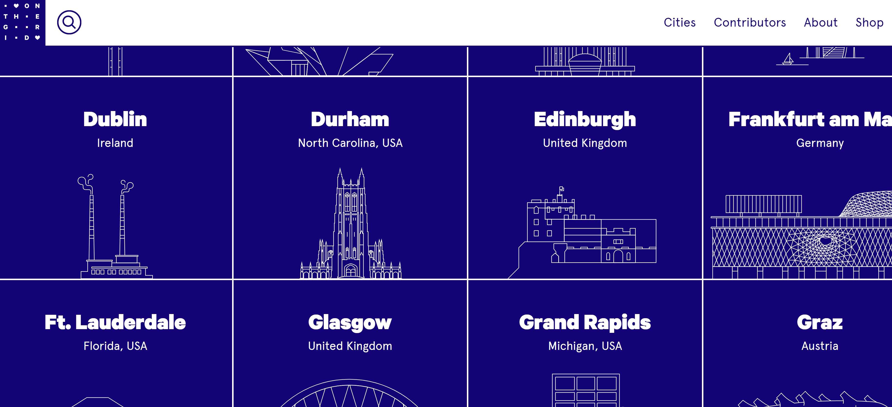

Websites with different design elements
Contrast
Website:
On the Grid

On the Grid website uses contrasting color palatte to capture the attention of users.
It uses blue colored tiles with white text and white image outline of city landmarks.
Each tile and font/image switches colors when mouse is hovered which gives another dimension to contrast.
Repetition
Website:
On the Grid
Almost all of the websites use repetition of visual elements for organization and display.
detail 1
detail 2
detail 3
Alignment
Website:
On the Grid
Proximity
Website:
On the Grid
some details